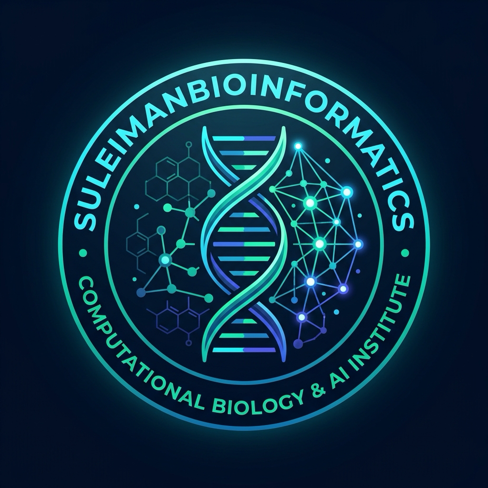

Pioneering Open Science in
Genomics & Structural Biophysics
An integrated ecosystem uniting rigorous Biopython workflows, Oxford Nanopore metagenomics, 3D AlphaFold structural mechanics, and Cambridge University machine learning mathematics.
Interactive Bioinformatics Studio
Test algorithms instantly in your browser: compute GC-skew windowing, analyze Kyte-Doolittle hydropathy profiles, and inspect 3D biomolecular coordinate structures.
Curricula & Research Wiki Explorer
Search through 30 Biopython computational modules, Cambridge machine learning mathematics lectures, and interlinked genomics concept syntheses.
🔒 Source files & datasets are hosted in our Private repository — to request access, email suleyman.hacizade1@gmail.com.
SuleimanBioinformatics Ecosystem
Explore our synchronized repositories, specialized pipelines, and open-source computational tools.
Core Backend & Data Hub
Hosts datasets, starter kit scripts, 30 Biopython modules, Cambridge ML R lectures, and the Obsidian knowledge vault. Access is restricted to authorized collaborators.
Bioinformatics-analysis
High-throughput transcriptomics, Triple-Negative Breast Cancer (TNBC) RNA-seq differential expression, and clinical machine learning.
View Repository →Structural Biology (3D Protein AI)
AKT1/STN7 kinase modeling, AlphaFold coordinate parsing, molecular docking, and binding affinity simulations.
View Repository →MEGA Software Genetics
COL1A1 multi-species sequence alignments, phylogenetic tree reconstruction, and evolutionary distance modeling.
View Repository →
Suleiman Hajizadeh
Researcher at the Institute of Molecular Biology and Biotechnologies (IMBB), Azerbaijan. Specializing in high-throughput transcriptomics, oncogenomic clinical modeling, macromolecular biophysics, and applying Cambridge mathematical machine learning theory to biological sequences.
🔒 Private Data Access: For academic, research, or clinical dataset access inquiries, please reach out directly via email.